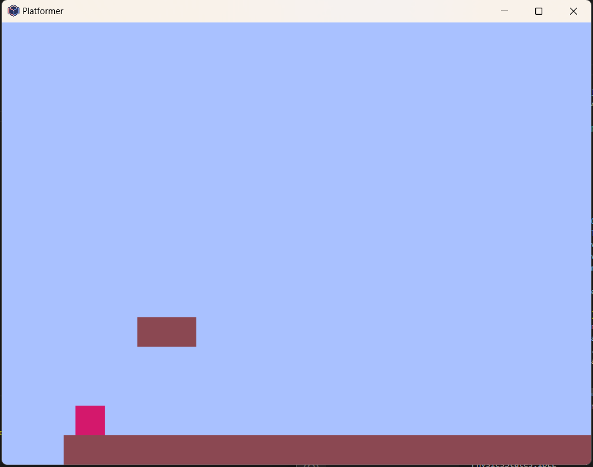
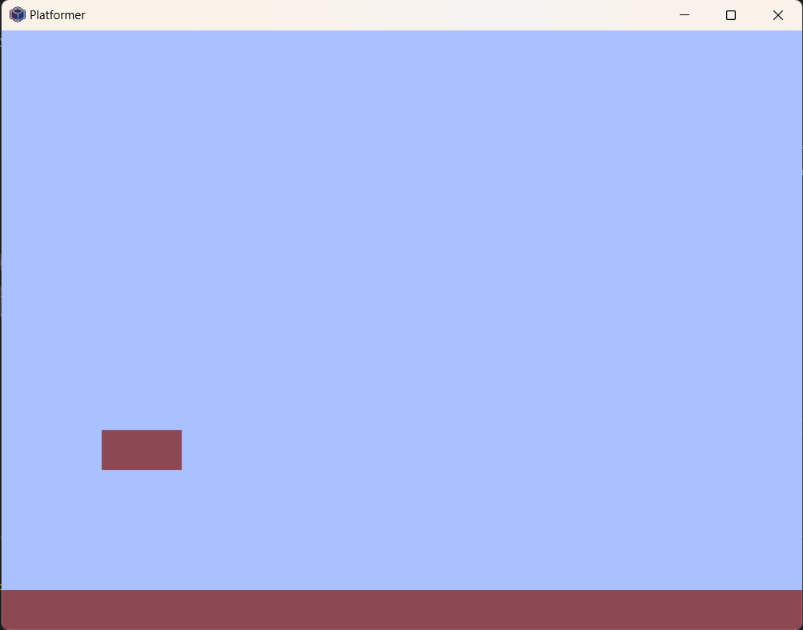
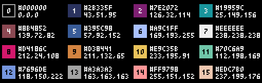
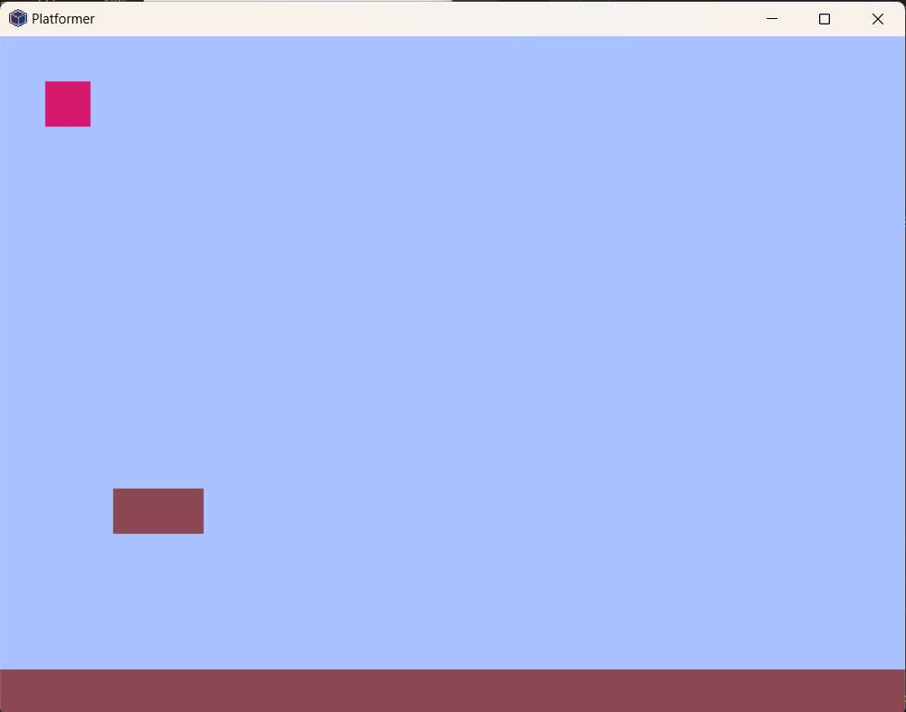

Write a Platformer Physics Engine
We’re going to make a basic platforming game with floors and a player. Later, you can add on to the game with enemies, sprites, audio, etc. This lesson is solely to introduce you to some physics and object-oriented programming concepts while creating a platformer physics engine. Here’s what the game will end up looking like.

Create an Environment and Platforms
The first thing we are going to do is create some platforms (floors) for the player to land on. Consider what data/functions a floor could be made up of, like its dimensions, color, collision checking, and display (draw):
data:
x: float
y: float
width: float
height: float
color: int
functions: is_colliding_top()
draw()Let’s make a class for our objects. We’ll call it Box because it can likely be used beyond just floors. The floor can either be filled in or not, depending on if filled is True or False (it has a default value of False).
Make a file called
engine.pywhere we can put all of our classes.
# engine.py
# we'll need these imports later
import pyxel
from typing import Optional, List, Callable
from enum import Enum
class Box:
def __init__(
self, x: float, y: float, w: float, h: float, col: int, filled=False
):
self.x = x
self.y = y
self.w = w
self.h = h
self.col = col
self.filled = filled
def draw(self):
if self.filled:
pyxel.rect(self.x, self.y, self.w, self.h, self.col)
else:
pyxel.rectb(self.x, self.y, self.w, self.h, self.col)To instantiate these floors, use this for your starting game code in main.py:
# main.py
import pyxel
from engine import *
SKY_COLOR = 6
PLAYER_COLOR = 8
FLOOR_COLOR = 4
class App:
def __init__(self):
pyxel.init(400, 300, title="Platformer", quit_key=pyxel.KEY_Q)
self.floors = [
Box(0, pyxel.height - 20, pyxel.width, 20, FLOOR_COLOR, filled=True),
Box(50, pyxel.height - 100, 40, 20, FLOOR_COLOR, filled=True),
]
pyxel.run(self.update, self.draw)
def update(self):
pass
def draw(self):
pyxel.cls(SKY_COLOR)
for floor in self.floors:
floor.draw()
App()Output

On Your Own
Change the colors if you want and dimensions of the floors. Later, we’ll add a camera so that you can make a bigger level.
Colors:

Make a Player
Our player will also be a Box, but it needs to have more code that a simple box to detect inputs and move around. We will use the principle of inheritance to extend the Box class in a Player class.
# engine.py
# imports are here
# class Box:
class Player(Box):
def __init__(
self,
x: float,
y: float,
w: float,
h: float,
col: int,
filled=False,
keys_move_x_pos: List[int] = [],
keys_move_x_neg: List[int] = [],
keys_jump: List[int] = [],
):
super().__init__(x, y, w, h, col, filled)
self.keys_move_x_pos = keys_move_x_pos
self.keys_move_x_neg = keys_move_x_neg
self.keys_jump = keys_jumpsuper
Because the Player class inherits from Box, we can call the super() function in the __init__ function. This will call the __init__ function of Player’s parent (Box).
Instantiate Player in Game
The + below show where new code has been added to your existing code. Do not copy the +’s.
# main.py
import pyxel
from engine import *
SKY_COLOR = 6
+PLAYER_COLOR = 8
FLOOR_COLOR = 4
class App:
def __init__(self):
pyxel.init(400, 300, title="Platformer", quit_key=pyxel.KEY_Q)
self.floors = [
Box(0, pyxel.height - 20, pyxel.width, 20, FLOOR_COLOR, filled=True),
Box(50, pyxel.height - 100, 40, 20, FLOOR_COLOR, filled=True),
]
+ self.player = Player(
+ 20,
+ 20,
+ 20,
+ 20,
+ PLAYER_COLOR,
+ filled=True,
+ keys_move_x_pos=[pyxel.KEY_D, pyxel.KEY_RIGHT],
+ keys_move_x_neg=[pyxel.KEY_A, pyxel.KEY_LEFT],
+ keys_jump=[pyxel.KEY_W, pyxel.KEY_SPACE, pyxel.KEY_UP],
+ )
pyxel.run(self.update, self.draw)
def update(self):
pass
def draw(self):
pyxel.cls(SKY_COLOR)
for floor in self.floors:
floor.draw()
+ self.player.draw()
App()Output:

Falling Player and States
To have the Player fall and keep track of if it’s falling (or jumping, moving, idle, etc.), let’s introduce a State Machine into our program. You can think of a state machine like a boolean with extra options; instead of true/false, you can have idle/falling/jumping, etc. This is done with an Enum in Python.
Here’s an intro to state machines if you’re interested in knowing the motivation behind them.
# engine.py
# imports...
class PhysicsStates(Enum):
IDLE = 0
FALLING = 1
JUMPING = 2
RUNNING_LEFT = 3
RUNNING_RIGHT = 4
class PhysicsStateMachine:
def __init__(self):
self.state = PhysicsStates.IDLE
# class Box...Physics Class
Now we’ll have a Physics object that can be added to any Box and keep track of if an object is falling or grounded and how fast it is falling. Boxes having a Physics object is optional. You can think of this Physics object like a Rigidbody if you’ve used Unity or other game engine before.
# imports...
GRAVITY = 0.5
TERMINAL_VELOCITY = 6
PLAYER_SPEED = 6
JUMP_STRENGTH = 10
# class PhysicsStates...
# class PhysicsStateMachine...
class Physics:
def __init__(self):
self.dy = 0
self.is_grounded = False
self.is_falling = True
self.state_machine = PhysicsStateMachine()
def ground(self):
self.dy = 0
self.is_grounded = True
self.is_falling = False
def fall(self, is_colliding=False):
if self.is_grounded and not self.is_falling:
self.ground()
if self.dy >= GRAVITY:
self.is_grounded = False
self.state_machine.state = PhysicsStates.FALLING
elif self.dy < 0:
self.state_machine.state = PhysicsStates.JUMPING
else:
self.state_machine.state = PhysicsStates.IDLE
if not is_colliding or not self.is_grounded:
self.is_falling = True
self.dy += GRAVITY
if self.dy > TERMINAL_VELOCITY:
self.dy = TERMINAL_VELOCITY
class Box:
def __init__(
+ self, x: float, y: float, w: float, h: float, col: int, filled=False, phys=False
):
self.x = x
self.y = y
self.w = w
self.h = h
self.col = col
self.filled = filled
+ self.phys = Physics() if phys else None
+ def fall(self, collider: Callable[[any], bool]):
+ if self.phys:
+ # call the collider to see if the object can fall
+ self.phys.fall(collider(self))
+ self.y += self.phys.dy
+ # call the collider a second time for knockback
+ collider(self)
def draw(self):
+ if self.phys:
+ print(self.phys.state_machine.state)
if self.filled:
pyxel.rect(self.x, self.y, self.w, self.h, self.col)
else:
pyxel.rectb(self.x, self.y, self.w, self.h, self.col)Make the Player fall in the Game
# main.py
def update(self):
- pass
+ for floor in self.floors:
+ self.player.fall(lambda x: True)This will cause the player to fall through the floor, because we haven’t implemented any collision (The lambda x: True is a placeholder function where True enables constant falling).
Collision with the top of the floor
Here’s the final Box class with a function for checking collision with the top.
# engine.py
class Box:
def __init__(
self, x: float, y: float, w: float, h: float, col: int, filled=False, phys=False
):
self.x = x
self.y = y
self.w = w
self.h = h
self.col = col
self.filled = filled
self.phys = Physics() if phys else None
def is_colliding_top(self, box):
if (
(box.y + box.h >= self.y and box.y <= self.y)
and box.phys
and (
(self.x <= box.x + box.w and self.x + self.w >= box.x + box.w)
or (self.x <= box.x and self.x + self.w >= box.x)
)
):
if box.phys.dy > 0:
# knockback
box.phys.ground()
box.y = self.y - box.h - GRAVITY
return True
return False
def fall(self, collider: Callable[[any], bool]):
if self.phys:
# call the collider to see if the object can fall
self.phys.fall(collider(self))
self.y += self.phys.dy
# call the collider a second time for knockback
collider(self)
def draw(self):
if self.phys:
print(self.phys.state_machine.state)
if self.filled:
pyxel.rect(self.x, self.y, self.w, self.h, self.col)
else:
pyxel.rectb(self.x, self.y, self.w, self.h, self.col)Now that our floors have collision checking, we can modify the update function in main.py to use the collision checker.
# main.py
def update(self):
for floor in self.floors:
- self.player.fall(lambda x: True)
+ self.player.fall(floor.is_colliding_top)Player Movement
Finally, add player movement. Here’s the final Player class in engine.py.
class Player(Box):
def __init__(
self,
x: float,
y: float,
w: float,
h: float,
col: int,
filled=False,
keys_move_x_pos: List[int] = [],
keys_move_x_neg: List[int] = [],
keys_jump: List[int] = [],
):
super().__init__(x, y, w, h, col, filled, True)
self.keys_move_x_pos = keys_move_x_pos
self.keys_move_x_neg = keys_move_x_neg
self.keys_jump = keys_jump
def inputs(self):
x = self.x
for key in self.keys_move_x_pos:
# move x positive
if pyxel.btn(key):
self.x += PLAYER_SPEED
break
for key in self.keys_move_x_neg:
# move x negative
if pyxel.btn(key):
self.x -= PLAYER_SPEED
break
for key in self.keys_jump:
# jump
if pyxel.btnp(key) and self.phys and self.phys.is_grounded:
self.phys.is_grounded = False
self.phys.dy = -JUMP_STRENGTH
break
if self.phys.state_machine.state == PhysicsStates.IDLE:
if self.x > x:
self.phys.state_machine.state = PhysicsStates.RUNNING_RIGHT
elif self.x < x:
self.phys.state_machine.state = PhysicsStates.RUNNING_LEFTAnd here’s the update function in main.py. It gets the inputs and has the camera follow the player.
# main.py
def update(self):
for floor in self.floors:
self.player.fall(floor.is_colliding_top)
+ self.player.inputs()
+ pyxel.camera(self.player.x - 50, 0)Make sure that your Player instantiation has the keybinding you want.
# main.py
self.player = Player(
20,
20,
20,
20,
PLAYER_COLOR,
filled=True,
keys_move_x_pos=[pyxel.KEY_D, pyxel.KEY_RIGHT],
keys_move_x_neg=[pyxel.KEY_A, pyxel.KEY_LEFT],
keys_jump=[pyxel.KEY_W, pyxel.KEY_SPACE, pyxel.KEY_UP],
)Final Code
To check your code with final project, visit this: https://github.com/buckldav/pyxel-platformer.